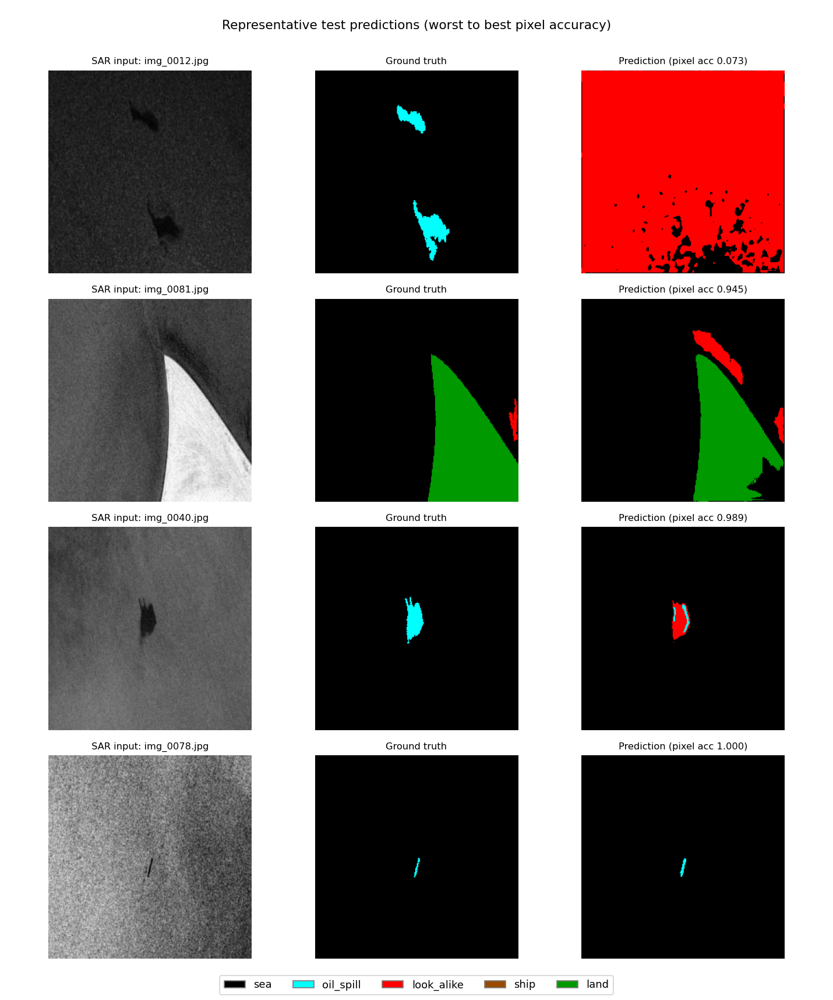
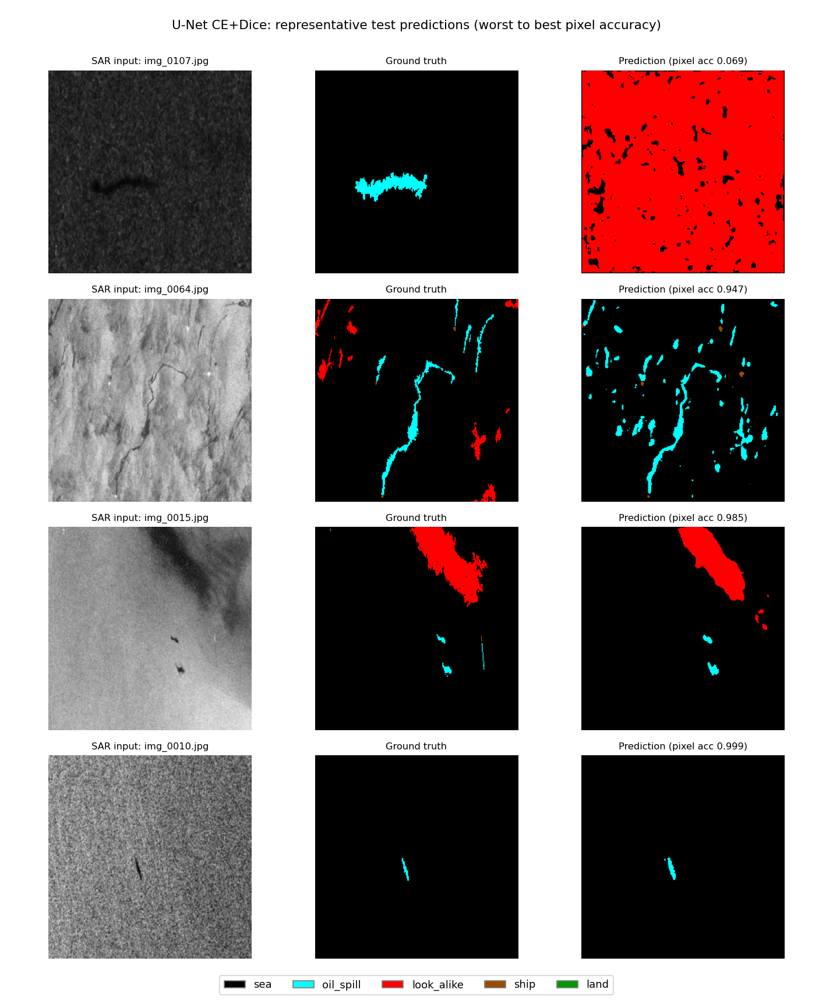
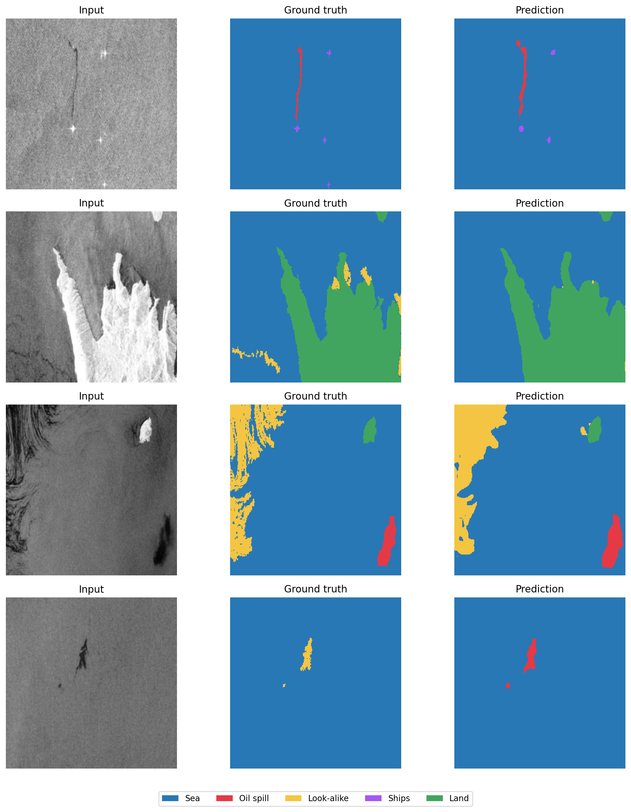

Four-experiment team comparison
This project investigates five-class semantic segmentation of satellite SAR oil spill imagery. The target categories are Sea, Oil Spill, Look-alike, Ships, and Land.
Experiment 1: U-Net with Cross-Entropy Loss.
Experiment 2: U-Net with Cross-Entropy and Dice Loss.
Experiment 3: DeepLabV3+ with a frozen pretrained encoder.
Experiment 4: DeepLabV3+ with encoder fine-tuning.
| Member | Model | Experiment | Epoch | mIoU | Mean Dice | Accuracy | Oil IoU | Ships IoU |
|---|---|---|---|---|---|---|---|---|
| Member1 | U-Net | Cross-Entropy | 25 | 0.4365 | 0.5282 | 91.9006% | 0.2243 | 0.0000 |
| Member2 | U-Net | CE + Dice | 30 | 0.5347 | 0.6556 | 92.3304% | 0.3079 | 0.2903 |
| Member3 | DeepLabV3+ | Frozen Backbone | 16 | 0.6509 | 0.7616 | 96.4869% | 0.4895 | 0.3255 |
| Member4 | DeepLabV3+ | Fine-tuning | 26 | 0.6628 | 0.7724 | 96.4499% | 0.5252 | 0.3432 |
| Class | Member 1 | Member 2 | Member 3 | Member 4 |
|---|---|---|---|---|
| Sea | 0.9188 | 0.9231 | 0.9637 | 0.9630 |
| Oil Spill | 0.2243 | 0.3079 | 0.4895 | 0.5252 |
| Look-alike | 0.3100 | 0.3278 | 0.5753 | 0.5724 |
| Ships | 0.0000 | 0.2903 | 0.3255 | 0.3432 |
| Land | 0.7295 | 0.8243 | 0.9004 | 0.9102 |
Combining Cross-Entropy and Dice Loss improved the reported U-Net test mIoU compared with Cross-Entropy alone. Fine-tuning the pretrained DeepLabV3+ encoder improved test mIoU and Oil Spill IoU compared with the frozen backbone experiment.
Among the four recorded evaluations, Member 4 achieved the highest test mIoU. Member 1 obtained zero IoU for the Ships class.
These figures come from the four original test evaluations, not from a newly rerun unified evaluation. The U-Net evaluations count 7,208,960 test pixels, whereas the DeepLabV3+ evaluations exclude 22 unknown-color pixels and count 7,208,938 pixels. Training/validation partitioning also differs between the U-Net and DeepLabV3+ experiments. These differences should be considered when interpreting the cross-architecture comparison.
The figures below are examples saved by each experiment. They are not guaranteed to correspond to the same input images and should not be presented as matched comparisons.



The package contains the saved best model weights, available configuration and source files, historical training records and evaluation outputs. The original dataset is not bundled. Separate notebooks should be included where available to support reconstruction of each experiment.